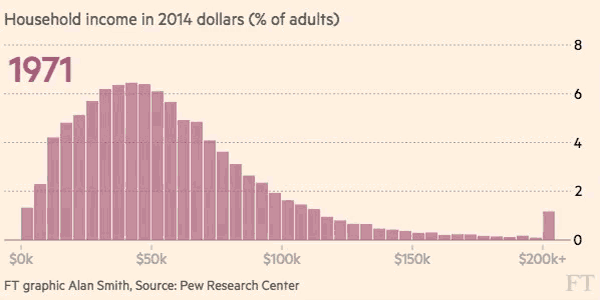

class: inverse, middle, center # Describing distributions --- .left-column[ ## Review ] .right-column[ ## Summarizing distributions .center[<img src="mean.png" width = 600>] We've seen one way to summarize distributions: .center[the <b>expectation</b> AKA the <b>mean</b>] Today we'll see some other measures. ] --- .left-column[ ## Review ## Why ] .right-column[ ## Why is the mean not enough? #### Reason 1: Sometimes it's not the best measure of centrality ] -- .right-column[  .center[What's happening to the mean?] ] --- .left-column[ ## Review ## Why ] .right-column[ ## Why is the mean not enough? #### Reason 2: We might care about other aspects of the distribution .center[<img src="dists.png", height = 350>] .center[All these distributions have the same expectation!] ] --- .left-column[ ## Review ## Why ## Quants ] .right-column[ ## Quantiles One alternative to describe distributions is via <b>quantiles</b>. The qth-quantile of $X$ is a point $x$ <i>on the real line</i> such that + $P(X \leq x)$ is *at least* $q$ + $P(X \geq x)$ is *at least* $1-q$ ] -- .right-column[ .center[ <img src="quant0.png" height = 300> ] ] --- .left-column[ ## Review ## Why ## Quants ] .right-column[ ## Quantiles One alternative to describe distributions is via <b>quantiles</b>. The qth-quantile of $X$ is a point $x$ <i>on the real line</i> such that + $P(X \leq x)$ is *at least* $q$ + $P(X \geq x)$ is *at least* $1-q$ ] .right-column[ .center[ <img src="quant1.png" height = 300> ] ] --- .left-column[ ## Review ## Why ## Quants ] .right-column[ ## Quantiles One alternative to describe distributions is via <b>quantiles</b>. The qth-quantile of $X$ is a point $x$ <i>on the real line</i> such that + $P(X \leq x)$ is *at least* $q$ + $P(X \geq x)$ is *at least* $1-q$ ] .right-column[ .center[ <img src="quant2.png" height = 300> ] ] --- .left-column[ ## Review ## Why ## Quants ] .right-column[ ## Quantiles One alternative to describe distributions is via <b>quantiles</b>. The qth-quantile of $X$ is a point $x$ <i>on the real line</i> such that + $P(X \leq x)$ is *at least* $q$ + $P(X \geq x)$ is *at least* $1-q$ ] .right-column[ .center[ <img src="quant3.png" height = 300> ] ] --- .left-column[ ## Review ## Why ## Quants ] .right-column[ ## Quantiles One alternative to describe distributions is via <b>quantiles</b>. The qth-quantile of $X$ is a point $x$ <i>on the real line</i> such that + $P(X \leq x)$ is *at least* $q$ + $P(X \geq x)$ is *at least* $1-q$ ] .right-column[ .center[ <img src="quant4.png" height = 300> ] ] --- .left-column[ ## Review ## Why ## Quants ] .right-column[ ## Percentile A <b>percentile</b> is pretty much synonimous with quantile. The only difference is that it's a number in [0, 100]. ] .right-column[ .center[ <img src="percent0.png" height = 300> ] ] --- .left-column[ ## Review ## Why ## Quants ] .right-column[ ## Percentile A <b>percentile</b> is pretty much synonimous with quantile. The only difference is that it's a number in [0, 100]. ] .right-column[ .center[ <img src="percent0.png" height = 300> ] ] --- .left-column[ ## Review ## Why ## Quants ] .right-column[ ## Percentile A <b>percentile</b> is pretty much synonimous with quantile. The only difference is that it's a number in [0, 100]. ] .right-column[ .center[ <img src="percent1.png" height = 300> ] ] --- .left-column[ ## Review ## Why ## Quants ] .right-column[ ## Percentile A <b>percentile</b> is pretty much synonimous with quantile. The only difference is that it's a number in [0, 100]. ] .right-column[ .center[ <img src="percent2.png" height = 300> ] ] --- .left-column[ ## Review ## Why ## Quants ] .right-column[ ## Percentile A <b>percentile</b> is pretty much synonimous with quantile. The only difference is that it's a number in [0, 100]. ] .right-column[ .center[ <img src="percent3.png" height = 300> ] ] --- .left-column[ ## Review ## Why ## Quants ] .right-column[ ## Percentile A <b>percentile</b> is pretty much synonimous with quantile. The only difference is that it's a number in [0, 100]. ] .right-column[ .center[ <img src="percent4.png" height = 300> ] ] --- .left-column[ ## Review ## Why ## Quants ## CDFs ] .right-column[ ## Finding quantiles You can find quantiles in tables like these: <img src="probtable.png" height = 250> <font size=3> For example, we'd say that: + The 0.1-quantile of this distribution is + The 0.25-quantile of this distribution is + The 0.5-quantile of this distribution is + The 0.75-quantile of this distribution is + The 0.9-quantile of this distribution is ] --- .left-column[ ## Review ## Why ## Quants ## CDFs ] .right-column[ ## Finding quantiles You can find quantiles in tables like these: <img src="probtable.png" height = 250> <font size=3> For example, we'd say that: + The 0.1-quantile of this distribution is $\approx -1.28$ + The 0.25-quantile of this distribution is $\approx -0.67$ + The 0.5-quantile of this distribution is $0$ + The 0.75-quantile of this distribution is $\approx 0.67$ + The 0.9-quantile of this distribution is $\approx 1.28$ ] --- .left-column[ ## Review ## Why ## Quants ## CDFs ] .right-column[ ## Finding quantiles Can you see how we're **inverting** the CDF? Usual CDF gives us a probability: $$\text{Given }x, P(X \leq x) = F(x)$$ ] --- .left-column[ ## Review ## Why ## Quants ## CDFs ] .right-column[ ## Finding quantiles Can you see how we're **inverting** the CDF? Usual CDF gives us a probability: $$\text{Given }x = 0.5, P(X \leq 0.5) = F(0) = 0.5$$ ] --- .left-column[ ## Review ## Why ## Quants ## CDFs ] .right-column[ ## Finding quantiles Can you see how we're **inverting** the CDF? Usual CDF gives us a probability: $$\text{Given }x, P(X \leq x) = F(x)$$ <br> Now we're going the other way around: $$\text{Given a probability }a$$ $$ \text{we find }x\text{ such that } P(X \leq x) = F(x) = a$$ ] -- .right-column[ In other words, we're querying the <b>inverse CDF</b> function $$F^{-1}(a)$$ ] --- .left-column[ ## Review ## Why ## Quants ## CDFs ] .right-column[ ## Inverse CDF The inverse CDF function has other names: + Quantile function (my preferred one) + Percent point function (used by scipy.stats) <img src="quantspython.png" width = 600> ] --- .left-column[ ## Review ## Why ## Quants ## CDFs ## Names ] .right-column[ ## Important quantiles The $0.50$ quantile is commonly called the <b>median</b> The $0.25$, $0.50$ and $0.75$ quantiles are called <b>first, second and third quartiles</b> <img src="wiki_quant.png" height = 250> The region between $Q1$ and $Q3$ is called the <b>interquartile range</b>. ] --- .left-column[ ## Review ## Why ## Quants ## CDFs ## Names ## Numbers ] .right-column[ ## Analogy with numbers <font size=3> <i>But I've heard about a median of numbers!</i> - I hear you think. </font> Our textbook explains how to find the median of <i>numbers</i>. ] -- .right-column[ <img src="med1.png" width=600> ] -- .right-column[ <img src="med2.png" width=600> ] --- .left-column[ ## Review ## Why ## Quants ## CDFs ## Names ## Numbers ] .right-column[ ## Analogy with numbers How does this reconcile with the definition we just saw? $$1,1,1,2,2,3,3,4,4,4,4,5,7$$ ] -- .right-column[ We think about data as <i>outcomes of a random variable </i>. .center[<img src="qpmf.png", width = 500>] ] -- .right-column[ The median we get using this "empirical PMF" is also 3. .center[<font size=2>If there are ties, we either take the smallest, or the average</font>] ] --- .left-column[ ## Review ## Why ## Quants ## CDFs ## Names ## Numbers ## Moments ] .right-column[ ## Moments The second way we can describe a distribution is via its <b>moments</b>. The kth-<b>moment</b> of $X$ is described as: $$E[X^k] = \sum_{i} x_i^k p_X(x_i)$$ ] -- .right-column[ To get the kth-<b>centered moment</b> of $X$, we just subtract the mean first $$E[X^k] = \sum_{i} (x_i - E[X])^k p_X(x_i)$$ ] --- .left-column[ ## Review ## Why ## Quants ## CDFs ## Names ## Numbers ## Moments ] .right-column[ ## First moment is expectation Of course, since $E[X^{1}] = E[X]$. Let's go through an example: $$X \sim Bernoulli(3, \frac{1}{2})$$ ] -- .right-column[ <font size=3> $$ P(X = x) = \begin{cases} \frac{1}{8} \qquad \text{ if } k = 0 \\\ \frac{3}{8} \qquad \text{ if } k = 1 \\\ \frac{3}{8} \qquad \text{ if } k = 2 \\\ \frac{1}{8} \qquad \text{ if } k = 3 \end{cases} $$ </font> ] -- .right-column[ $$E[X] = \frac{1}{8}0 + \frac{3}{8}1 +\frac{3}{8}2 +\frac{1}{8}3 = 1.5$$ .center[The first moment of $X$ AKA expectation] ] --- .left-column[ ## Review ## Why ## Quants ## CDFs ## Names ## Numbers ## Moments ] .right-column[ ## Second centered moment is variance The second centered moments is famously called the <b>variance</b>. It can be denoted as $E[(X - E[X])^2]$ or $Var[X]$ ] .right-column[ <font size=3> $$ P(X = x) = \begin{cases} \frac{1}{8} \qquad \text{ if } k = 0 \\\ \frac{3}{8} \qquad \text{ if } k = 1 \\\ \frac{3}{8} \qquad \text{ if } k = 2 \\\ \frac{1}{8} \qquad \text{ if } k = 3 \end{cases} $$ </font> ] .right-column[ <font size=3> $$Var[X] = \frac{1}{8}(0 - 1.5)^2 + \frac{3}{8}(1- 1.5)^2 +\frac{3}{8}(2- 1.5)^2 +\frac{1}{8}(3- 1.5)^2 = \frac{3}{4}$$ </font> .center[The second centered moment of $X$ AKA variance] ] --- .left-column[ ## Variance ] .right-column[ ## Variance is sum of sq distances from mean .center[<img src="variance.svg" height = 400>] ] --- .left-column[ ## Variance ] .right-column[ ## But why *squared* distances from *mean*? Why not the *absolute value*? <br> Why not have the *median* as center? <br> Or maybe take the *fourth* power? ] -- .right-column[ It's mostly convenience! The variance has some convenient properties: If we know $Var[X]$ and $Var[Y]$, we immediately know: 1. $Var[X + a] = Var[X]$ for any constant $a$ 2. $Var[aX] = a^2Var[X]$ for any constant $a$ 2. $Var[X + Y] = Var[X] + Var[Y]$ **if $X$ and $Y$ are independent** You'll prove the first two properties in HW8, and the last one in a later HW. ] --- .left-column[ ## Variance ## Std ] .right-column[ ## Standard deviation We like our summaries to be in the same units as the data. .center[<i>The average Statistics grade is 94.6 points</i> .red[*]] .footnote[<font color="red">*</font> <font size=1>No, it isn't.</font>] ] -- .right-column[ But because we're squaring the outcome when computing the variance, the units are also squared. .center[<i>The variance of the Statistics grade is 1024 points$^2$</i> ] What does "points-squared" mean? Hard to make sense. ] --- .left-column[ ## Variance ## Std ] .right-column[ ## Standard deviation In order to solve this issue, it's common to take the square root of the variance. The resulting number is called the <b>standard deviation</b>. $$Std(X) = \sqrt{Var[X]} = \sqrt{E[(X - E[X])^2]}$$ ] .right-column[ .center[<i>The standard deviation of the grade is 32 points</i> ] ] --- .left-column[ ## Variance ## Std ## Numbers ] .right-column[ ## What about the variance of numbers? What is the variance of this data? $$1,1,2,3,5,5,5,6$$ ] -- .right-column[ Think about data as outcome of some random variable $X$. <font size=3> $$ \hat{P}(X = k) = \begin{cases} \frac{2}{8} \qquad \text{ if } k = 1 \\\ \frac{1}{8} \qquad \text{ if } k = 2 \\\ \frac{1}{8} \qquad \text{ if } k = 3 \\\ \frac{3}{8} \qquad \text{ if } k = 5 \\\ \frac{1}{8} \qquad \text{ if } k = 6 \\\ 0 \qquad \text{otherwise} \end{cases} $$ Writing "$\hat{P}$" since these are empirical probabilities. </font> ] .right-column[ <font size=2> $$\widehat{Var}[X] = \frac{2}{8}(1-3.5)^2 + \frac{1}{8}(2-3.5)^2 + \frac{1}{8}(3-3.5)^2 + \frac{3}{8}(5 -3.5)^2 + \frac{1}{8}(6 - 3.5)^2$$ </font> ] --- .left-column[ ## Variance ## Std ## Numbers ## Higher ] .right-column[ ## What about higher moments? The first moment is a measure of centrality. The second (centered) moment measures spread. The other moments measure things like how skewed the distribution is, or how fast its tails converge to zero, etc. ] -- .right-column[ #### Should we care about them? In an advanced statistics course, we would. But that's for <i>mathy</i> reasons. In the real world, we are more interested in mean and variance. For more details, we prefer to look at the quantiles. ] --- .left-column[ ## Variance ## Std ## Numbers ## Higher ## Common ] .right-column[ ## Variance of Bernoulli Let's find the $Var$ of $X\sim Bernoulli(p)$ Step #1: Find $E[X]$ ] -- .right-column[ $E[X] = p\cdot 1 + (1-p)\cdot 0 = p$ ] -- .right-column[ Step #2: Plug it into the Variance formula ] -- .right-column[ $E[(X - p)^2] = p\cdot (1 - p)^2 + (1-p)\cdot (0 - p)^2 = p(1-p)$ ] -- .right-column[ .center[<a href="https://en.wikipedia.org/wiki/Bernoulli_distribution">Check it! 🤓</a>] ] --- .left-column[ ## Variance ## Std ## Numbers ## Higher ## Common ] .right-column[ ## Variance of Uniform[0,1] Let's find the $Var$ of $X\sim Uniform(0,1)$ ] -- .right-column[ Step #1: Find $E[X]$ $E[X] = \int_0^{1} x\cdot f_X(x) \ dx = \int_0^{1} x\cdot 1 \ dx =\frac{1}{2}$ ] -- .right-column[ Step #2: Plug it into the Variance formula <img src="unif_var.png" height = 220> .center[<a href="https://en.wikipedia.org/wiki/Uniform_distribution_(continuous)">Check it! 🤓</a>] ] --- --- class: inverse, middle, center # Quick checks --- ## Quick checks <b>How can we summarize a distribution?</b> <b>What are quantiles?</b> <b>Which quantiles are most important?</b> <b>What are moments?</b> <b>What moments are most important?</b> <b>What is a standard deviation?</b> <b>How do we compute quantiles or moments of data?</b> --- ## Quick checks <b>How can we summarize a distribution?</b> <font size=2>In two ways: using <b>moments</b> or <b>quantiles</b>.<br></font> <b>What are quantiles?</b> <font size=2>The q-quantile of $X$ is number on the real line such that the probability that $X$ is smaller than $q$ is at least $q$; and such that the probability that $X$ is larger than $x$ is at least $q$ as well.</font> <b>Which quantiles are most important?</b> <font size=2>The 0.5-quantile, also called the median, is a common measure of centrality. The range between the 0.25 and 0.75 quantile, called the "interquartile range", is a measure of spread.</font> <b>What are moments?</b> <font size=2>They are expectations of powers of $X$. For centered moments, we subtract the mean first.</font> <b>What moments are most important?</b> <font size=2>The first moment is the expectation and is one measure of centrality. The second <i>centered</i> moment is called the variance and is a measure of spread. Other moments measure other characteristic of the distribution, but we won't deal with them in this course.</font> --- ## Quick checks <b>What is a standard deviation?</b> <font size=2>It's just the square root of the variance. This makes the units agree with the data.</font> <b>How do we compute quantiles or moments of data?</b> <font size=2>We pretend that the data to be realizations of random variables, and then compute moments or quantiles using the empirical distribution.</font>